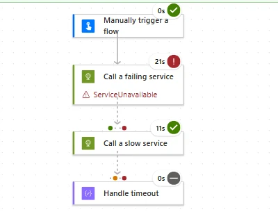
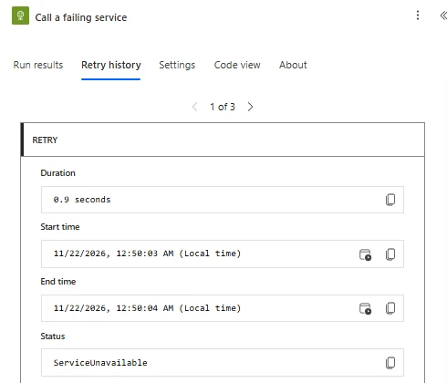
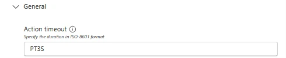

- Power Automate
- Level 4 · Reliable flows · 3 of 7
Retry policies and timeouts
Many failures are temporary: a busy service, a network blip, a 429 too many requests. Power Automate retries these automatically. Knowing the rules lets you make a flow patient where it should be and fast to fail where it shouldn't wait.
Retries
WhatA retry policy on each action decides how often and how long to try again after a temporary error.
WhyMost temporary errors fix themselves seconds later; retries avoid failed runs for nothing.
DemoA call to a test address that always answers 503: Fixed interval, 3 retries, every 5 seconds.
What happens on an error
Action calls the service
Is the error temporary? (408, 429, 5xx, connection)
Yes
Wait, then retry (up to the policy's count)
Succeeds, or fails after the last retry
No (400, 401, 404)
Fail now: retrying won't change the answer
The demo: 503 every time
| Attempt | Wait before | Result |
|---|---|---|
| 1 (original) | – | 503 |
| Retry 1 | 5 s | 503 |
| Retry 2 | 5 s | 503 |
| Retry 3 | 5 s | 503 → Failed after 21 s |



| Policy | Behaviour | Use when |
|---|---|---|
| Default | Exponential back-off: waits grow longer | Most actions |
| Exponential interval | You set count, min and max wait | Busy services |
| Fixed interval | You set count and one wait | Predictable tests, as in the demo |
| None | Fail immediately | A quick failure beats waiting |
Timeouts: what they really limit

The surprise
| Setting | Value |
|---|---|
| Service answers after | 10 s |
| Action timeout | PT3S |
| Result | Succeeded in 11 s |
The action timeout limits time spent on retries and asynchronous (long-running) responses, not one single HTTP request.
To stop waiting on a slow API, ask the API for a shorter server-side timeout, or move the call into a child flow and handle its failure in the parent.
Waiting on purpose: Delay and Delay until
| Action | Waits | Example |
|---|---|---|
| Delay | A fixed time | 2 minutes before reading a just-uploaded Excel file |
| Delay until | Until a date and time | addDays(utcNow(), 3) for a reminder |
Watch out
- A waiting run still counts toward the 30-day run limit. For long waits, a scheduled flow that checks what's due is safer.
- ISO 8601 durations:
PT5S5 seconds,PT1H1 hour,P2D2 days.
New to this? Start from the basics optional
Transient error: a failure that goes away if you try again later.
Back-off: waiting longer between each retry.
Common mistakes
- Turning retries off on calls to busy services.
- Expecting the action timeout to cut a single slow request.
- Week-long Delays instead of a scheduled check.